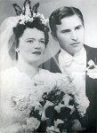
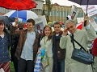

Jan Fredman
Pol.mag., ekonom, gymnasielärare 1973-01-01--2009-08-01 på Strömbackaskolan i Piteå kn.
| Född: | 1946 Kristineberg, Björksele fs, Lycksele sn. [1] | Född på sjukstugan i Norsjö. Föräldrar: Lab.biträde Ingvar* Valentin Fredman och Rut* Elvira f. Granström. |
|---|
| Utbildad: | 1963 Realexamen i Burträsk. | 3-årigt. |
|---|
| Examen: | 1966 Studentexamen i Umeå. | |
|---|
| Utbildad: | 1967 Uoff I20 i Umeå, 15 mån. | Kursetta på plutonchefsskolan. Krigsplacerad som värnpliktig gergeant |
|---|
| Utbildad: | från 1967-09-01 till 1970-01-01 Umeå Universitet. | Som kuriosa: Kaj Pollack, var min lärare i statistikkursen denna höst. |
|---|
| Examen: | 1968 Kadettskolan, Motorofficer I16, Halmstad. | Krigsplacerad som värnpliktig Kapten i Västerbotens inland. |
|---|
| Examen: | 1970-01 Umeå Universitet. | Pol.mag. 180 p i företagsekonomi, nationalekonomi, statskunskap, statistik och juridik. Studierna kräver normalt 4,5 år, men för min del tog det 2,5 år. Fortsatta studier i sociologi och samhällsplanering. |
|---|
| Lärarvikarie: | mellan 1970-01 och 1971-12 Umeå och Maå. | |
|---|
| Utbildad: | 1972-01 Lärarhögskolan, Uppsala Universitet. | Ämnesteoretisk pedagogisk utbildning i företagsekonomi och samhällskunskapp med praktikperioder vid gymnasieskolor i Uppsala. Jag kom in som reserv, medan mina kurskamrater hade dubbla examina för att komma in. |
|---|
| Examen: | 1972-12-20 Lärarhögskolan, Uppsala Universitet. | Praktiktermin i Hudiksvall under ht 1972. Behörig att undervisa i ekonomiska ämnen och samhällskunskap på gymnasiet. |
|---|
| E.o. Adjunkt: | 1973-01-02 Gymnasium, Piteå sfs, Piteå kn. | Företagsekonomiska ämnen. |
|---|
| Datorpionär: | från 1981 Strömbackaskolan, Piteå sfs, Piteå kn. | |
|---|
| Computer Consultant: | mellan 1989 och 1999 EkData Konsult i Piteå. | Utveckling av relationsdatabasapplikationer i Windowsmiljö, uppdragsutbildning av personal hos företag och institutioner. Aukt.återförsäljning av hård- och mjukvara. från bl.a. Hewlett & Packard, HP och IBM. MicroSoft m.fl. Installation av större datornätverk i TokenRing-miljö med serverprogrammet Novell. |
|---|
| Släkt- och bygdeforskare: | efter 2003-05-20 Piteå stad, Piteå kn. | Har detta år tjänstgjort vid Strömbackaskolan i 30,5 år. |
|---|
| Redaktör och ansvarig utgivare för Ätt & Bygd: | från 2004-03 till 2007 Styrelsemedlem i Pitebygdens Forskarförening. | Styrelsemedlem och redaktör för medlemstidningen "Ätt & Bygd" www.piteforskare.se |
|---|
| Släktforska med DNA, studiecirklar, nätverksansvar: | från 2009 Forskarrum Navet, Burträsk. | |
|---|
| Avtalspensionär: | 2009-08-01 Strömbackaskolan, Piteå, Piteå sfs, Piteå kn. | 37 år som gymnasielärare i data-, företagsekonomiska ämnen och samhällskunskap. Det jag saknar mest är mitt engagemang i Ung Företagsamhet under de sista 13 åren med härliga framgångar för ett antal UF-företag från Strömbackaskolan i Piteå vid tävlingar på den årliga nationella UF-mässan i Älvsjö, Stockholm, där de representerade Norrbotten. Jag var diplomerad UF-lärare på SP- och NVT-programmen.
UF-Norrbotten skrev i sin årliga tidning att jag är en "Lärare som brinner för sitt uppdrag!".
PT skrev en artikel om mig 2009, som beskriver hur jag coachar företagare.
|
|---|
| Utflyttad till: | 2009-09-24 Skellefteå Burträsks-Gammelbyn 83:7, Tingshusgatan 4, Burträsk, Burträsk fs, Skellefteå kn. | |
|---|
| Styrelselesuppleant: | 2010-03-31 Skelleftebygdens Släktforskare. [2] | |
|---|
| Projektledare "Födda 1900-1940": | 2010-06-01 Skelleftebygdens Släktforskare. [3] | Registrering och databashantering av "Födda i Skellefteå stads- och landsförsamling". |
|---|
| Projektledare "SkelleftePorträtt": | 2010-10 Skelleftebygdens Släktforskare. [4] | |
|---|
| Styrelseledamot - kassör: | 2011-03 Lokalsamfundet Sverige-Israel (SSI), Skellefteå. [5] | Lokalsamfundet i Skellefteå kn
Ordförande: Kerstin Burström
|
|---|
| Styrelseledamot: | från 2012-03 till 2017-03 Skelleftebygdens Släktforskare. | Webbmaster för:
skellefteforskare.se
lokalhistoriaskelleftea.se
skefo.se
plus motsvarande FB-grupper.
|
|---|
| Styrelseledamot: | från 2015-03 till 2017-03 SKEFO. [6] | |
|---|
| Utflyttad till: | 1973-01 Piteå, Piteå sfs. Piteå kn. | |
|---|
| Omflyttad till: | 1973-06 Durrnäs, Piteå lfs, Piteå kn. | |
|---|
| Vigsel: | 1974-07-06 Bolidens kyrka, Bolidens fs, Skellefteå kn. | Vigselförrättare: Torsten Forsell, komminister i Fällfors fs. |
|---|
| Omflyttad till: | 1975-08 Jungmansgatan 4, Skuthamn, Piteå lfs, Piteå kn. | |
|---|
| Inflyttad till: | 1983-07 Pionen 6, Laxstigen 25, Klubbgärdet, Piteå sfs, Piteå kn. | |
|---|
| Levde: | 1991 Pionen 6, Laxstigen 25, Klubbgärdet, Piteå sfs, Piteå kn. [7] | |
|---|
| Skilsmässa: | 1999 Pionen 6, Laxstigen 25, Klubbgärdet, Piteå sfs, Piteå kn. | |
|---|
Noteringar
1960 - 1963 Burträsk - Realexamen vid Burträsk Realskola, 3 år.
1963-1966 Umeå Handelsgymnasium
Studentexamen med inrikting: Redovisning (kvällstid åk 3) och Distributionsekonomi, 3 år.
Juni 1966 -- aug. 1967 i Umeå och Sollefteå
Stabsuoffutbildning 15 mån., Vpl sergeant. Kursetta Umeå I20, betyg 10 10 10.
Skrevs in för akademiska studier vid Umeå Universitet i september 1967.
1968 Halmstad, I16
Sommarutbildning i 3 mån. vid I 16, Halmstads Kadettskola, Motofficersutbildning, Vpl löjtnant, med senare krigsplacering som Vpl kapten i norra Västerbottens inland.
1970-01 Umeå Universitet, Samhällsvetenskap
Filosofie Kanditatexamen och Filosofie Politisk Magisterexamen i Företagsekonomi (60 p), Nationalekonomi (50 p), Statskunskap (30 p), Statistik (20 p), Juridik (10 p) [normal studietid 4,5 år].
1970-1971
Fortsatta studier i samhällsplanering och sociologi under våren 1970.
Lärarvikarie i Umeå. Springvikarie på gymnasium - Dragonskolan Umeå i företagsekonomiska ämnen och rättskunskap. Långtidsvikariat vid Handelsskolan i Malå, där min fars morfar var folkskollärare på 1860-talet..
1972 Uppsala LHS
Ämnespedagogiska studier vid Uppsala Lärarhögskola VT1972, Företagsekonomi och Samhällskunskap. Ämnespedagogisk praktiktermin vid gymnasiet i Hudiksvall HT1972.
1972-12-20 Examen: Adjunkt i Ekonomiska ämnen och Samhällskunskap för gymnasium.
1973-01-01 Gymnasiet, Piteå stad
E.o.adjunktstjänst i ekonomiska ämnen vid gymnasiet i Piteå stad.
1973-08-10 Gymnasieskolan totalintegrerades och alla program flyttades till den nybyggda Strömbackaskolan i Piteå med ca. 2.000 elever. Datapionär och datoransvarig på Strömbackaskolans ekonomiska sektor, Piteå.
1974-06-06
Vigsel med Ulla-Stina Forsell i Bolidens kyrka, Bolidens fs, Skellefteå kn
1989-1999
Eget företag, EkData Konsult vid sidan om mitt heltidsarbete som gymnasielärare och ett antal förtroendeuppdrag.
1999
Skilsmässa, Klubbgärdet, Piteå sfs, Piteå kn
2009-08-01 Strömbackaskolan, Piteå
Avtalspensionär - Friherre
2009-09-24 Burträsk, Skellefteå kn
Utflyttning till nyinköpt souterrängvilla i Burträsk, Skellefteå kn
Tidigare Förtroendeuppdrag:
Revisor i Strömnäs GIF (ca 30 pärmar med verifikat och protokoll varje år i maj månad)
Kassör inom LR-facket - lokalavd., kommunavd. och distriktsstyrelsen
Ledamot i Skattenämnden 2 mandatperioder
Ledamot i Fastighetsdomstolen 1 mandatperiod
Styrelsesuppleant i Pitebygdens Forskarförening, redaktör för "Ätt & Bygd"
Aktuella förtroendeuppdrag
Styrelseledamot i Skelleftebygdens Släktforskare (SSF) 2010-2017. Webbmaster. Projektledare för "SkelleftePorträtt" och registrering av Födda i Skellefteå stads- och landsförsamling för åren 1901 tills sekretessgränsen på 70 år sätter stopp. Samordning, databashantering och applikationsutveckling i FileMaker Pro Advanced för båda projekten.
Styrelseledamot i SKEFO.
Styrelseledamot i Lokalsamfundet Sverige-Israel (SSI), Skellefteå, kassör
Jag presenterade en ny forsknng på "Författarsläkten i norr" med rötter i Västerbotten i min artikel i Provins 2012:1. Där har jag fastställt att Nicodemus Håkansson och hans hustru Margareta Persdotter på Gammelbyn 7, Västomsundet, Burträsk socken är anfäder till den redovisade "Författarsläkten i norr" med rötter i Västerbotten. Jag har erbjudit Skelleftebygdens Släktforskare att i samarbete ge ut en DVD senast hösten 2012 om dessa kända författare med rötter i Västerbotten.
Personhistoria
| Årtal | Ålder | Händelse |
|---|
| 1946 |
|
Födelse 1946 Kristineberg, Björksele fs, Lycksele sn [1] |
| 1947 |
|
Systern Rut Gullan Viveka Fredman föds 1947-11-29 Kristineberg, Björksele fs, Lycksele sn |
| 1949 |
|
Makan Ulla-Stina Forsell föds 1949 Boliden, Skellefteå lfs, Skellefteå sn [8] |
| 1954 |
|
Halvbrodern Nils Roger Granström Fredman föds 1954-12-23 Åsträsk, Kalvträsk fs, Burträsk sn |
| 1963 |
|
Utbildning 1963 Realexamen i Burträsk |
| 1966 |
|
Examen 1966 Studentexamen i Umeå |
| 1967 |
|
Utbildning 1967 Uoff I20 i Umeå, 15 mån |
| >1967 |
|
Utbildning från 1967-09-01 till 1970-01-01 Umeå Universitet |
| 1968 |
|
Examen 1968 Kadettskolan, Motorofficer I16, Halmstad |
| 1970 |
|
Examen 1970-01 Umeå Universitet |
| >1970 |
|
Lärarvikarie mellan 1970-01 och 1971-12 Umeå och Maå |
| 1972 |
|
Utbildning 1972-01 Lärarhögskolan, Uppsala Universitet |
| 1972 |
|
Examen 1972-12-20 Lärarhögskolan, Uppsala Universitet |
| 1973 |
|
Utflyttad till Ulla-Stina Forsell 1973-01 Piteå, Piteå sfs. Piteå kn |
| 1973 |
|
E.o. Adjunkt 1973-01-02 Gymnasium, Piteå sfs, Piteå kn |
| 1973 |
|
Omflyttad till Ulla-Stina Forsell 1973-06 Durrnäs, Piteå lfs, Piteå kn |
| 1974 |
|
Vigsel Ulla-Stina Forsell 1974-07-06 Bolidens kyrka, Bolidens fs, Skellefteå kn |
| 1975 |
|
Sonen David Fredman föds 1975 Durrnäs, Piteå, Piteå lfs, Piteå kn |
| 1975 |
|
Omflyttad till Ulla-Stina Forsell 1975-08 Jungmansgatan 4, Skuthamn, Piteå lfs, Piteå kn |
| 1977 |
|
Sonen Musiker Peter Fredman föds 1977 Skuthamn, Piteå lfs, Piteå kn |
| >1981 |
|
Datorpionär från 1981 Strömbackaskolan, Piteå sfs, Piteå kn |
| 1982 |
|
Dottern Maria Fredman föds 1982 Skuthamn, Piteå lfs, Piteå kn |
| 1983 |
|
Inflyttad till Ulla-Stina Forsell 1983-07 Pionen 6, Laxstigen 25, Klubbgärdet, Piteå sfs, Piteå kn |
| >1989 |
|
Computer Consultant mellan 1989 och 1999 EkData Konsult i Piteå |
| 1991 |
|
Levde Ulla-Stina Forsell 1991 Pionen 6, Laxstigen 25, Klubbgärdet, Piteå sfs, Piteå kn [7] |
| 1997 |
|
Modern Ruth Elvira Granström dör 1997-02-21 Skellefteå, S:t Olovs fs, Skellefteå kn |
| 1999 |
|
Skilsmässa Ulla-Stina Forsell 1999 Pionen 6, Laxstigen 25, Klubbgärdet, Piteå sfs, Piteå kn |
| 1999 |
|
Fadern Ingvar Valentin Fredman dör 1999-02-23 Enskede, Stockholm [9] |
| >2003 |
|
Släkt- och bygdeforskare efter 2003-05-20 Piteå stad, Piteå kn |
| >2004 |
|
Redaktör och ansvarig utgivare för Ätt & Bygd från 2004-03 till 2007 Styrelsemedlem i Pitebygdens Forskarförening |
| >2009 |
|
Släktforska med DNA, studiecirklar, nätverksansvar från 2009 Forskarrum Navet, Burträsk |
| 2009 |
|
Avtalspensionär 2009-08-01 Strömbackaskolan, Piteå, Piteå sfs, Piteå kn |
| 2009 |
|
Utflyttad till 2009-09-24 Skellefteå Burträsks-Gammelbyn 83:7, Tingshusgatan 4, Burträsk, Burträsk fs, Skellefteå kn |
| 2010 |
|
Styrelselesuppleant 2010-03-31 Skelleftebygdens Släktforskare [2] |
| 2010 |
|
Projektledare "Födda 1900-1940" 2010-06-01 Skelleftebygdens Släktforskare [3] |
| 2010 |
|
Projektledare "SkelleftePorträtt" 2010-10 Skelleftebygdens Släktforskare [4] |
| 2011 |
|
Styrelseledamot - kassör 2011-03 Lokalsamfundet Sverige-Israel (SSI), Skellefteå [5] |
| >2012 |
|
Styrelseledamot från 2012-03 till 2017-03 Skelleftebygdens Släktforskare |
| >2015 |
|
Styrelseledamot från 2015-03 till 2017-03 SKEFO [6] |
Källor
| [1] | SCB Födda AC Norsjö 101/1946 |
| |
| | |
| [2] | https://www.skellefteforskare.se/jan.htm |
| |
| | |
| [3] | https://www.skellefteforskare.se |
| |
| | |
| [4] | https://skellefteforskare.se/projekt.htm |
| |
| | |
| [5] | http://www.sverigeisrael.org/ |
| |
| | |
| [6] | https://skefo.se |
| |
| | |
| [7] | Mantalslängd 1991, Norrbottens län |
| |
| | |
| [8] | Mtl Västerbottens län 1971 |
| |
| | |
| [9] | Jan Fredman, RTB 99 |
| |
|
 |
| 1974-07-06. Ulla-Stina och Jan. Vigsel i Bolidens kyrka. |
| |
 |
| (Aug 1948). Jan 2 år, Ruth och Viveka 9 månader. |
| |
|
| Jan, 8 år. |
| |
|  |
| 1946-05-11. Brudparet Ruth Granström och Ingvar Fredman. |
| |
 |
| 1946-05-11. Mor Eva Granström, Ruth och Ingvar Fredman, far Karlander Granström och brudnäbben systern Gun-Britt Granström. |
| |
|
| 1970-03-30. Birger och Jan på långpromenad förbi Bjurliden, Annandag Påsk. |
| |
|
|
| |
|
| 1974-07-06. Vigselfoto med Ulla-Stina Forsell och Jan Fredman. |
| |
|
| 1977-09-17. Ulla-Stina och Jan Fredman i samband med Viveka Fredmans och Åke Olofssons vigsel i Skellefteå. |
| |
|  |
| 2001-06-08. Katarina Eklund, David, Maria, Peter och Jan Fredman gratulerar studenten Maria. |
|


{kind=link}
{kind=link}
{kind=link}
{kind=link}
{kind=link}
{kind=link}
{kind=link}